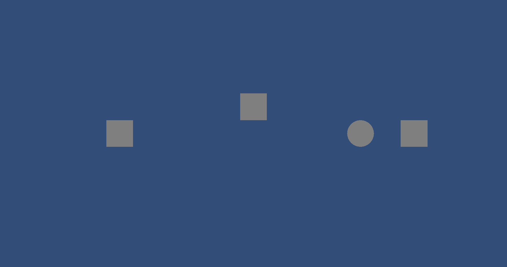
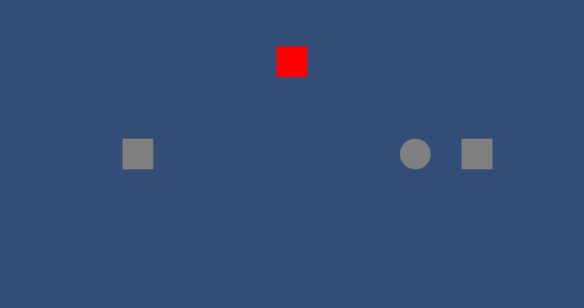

github.com/DirtybitGames/unityctl
unityctl lets AI agents remote-control a live Unity Editor through a lightweight bridge daemon. No batch mode required — the Editor stays open, interactive, and fully observable.
First, check that the bridge and Unity Editor are connected.
unityctl statusProject Status:
Path: ~/Workspaces/unityctl/unity-project
ID: proj-7b58d11d
Unity Editor: [+] Running
Bridge: [+] Running
PID: 26380
Port: 64197
Connection: [+] Unity connected to bridgeThe snapshot command gives an LLM-friendly view of the scene hierarchy, including instance IDs that can be used to target specific objects.
unityctl snapshotScene: TestScene
5 root objects
Main Camera [i:47012] Camera, AudioListener tag:MainCamera
pos(0.0, 0.0, -10.0)
MyCube [i:-5074] MeshFilter, BoxCollider, MeshRenderer, TestComponent prefab:Assets/Prefabs/TestCube.prefab
pos(0.0, 1.0, 0.0)
MyGroup [i:-5098] prefab:Assets/Prefabs/TestGroup.prefab
pos(5.0, 0.0, 0.0)
TestCube [i:-5102] MeshFilter, BoxCollider, MeshRenderer, TestComponent prefab:Assets/Prefabs/TestCube.prefab
pos(1.0, 0.0, 0.0)
InnerSphere [i:-5114] MeshFilter, SphereCollider, MeshRenderer
pos(-1.0, 0.0, 0.0)
MyVariant [i:-5086] MeshFilter, BoxCollider, MeshRenderer, TestComponent prefab:Assets/Prefabs/TestCubeVariant.prefab
pos(-5.0, 0.0, 0.0)
Ground [i:47002] MeshFilter, MeshCollider, MeshRenderer
pos(0.0, -0.5, 0.0) scale(10.0, 1.0, 10.0)Drill into a specific object to see all its component properties:
unityctl snapshot --id -5074 --componentsMyCube [i:-5074] prefab:Assets/Prefabs/TestCube.prefab
Transform:
position: (0.0, 1.0, 0.0)
Prefab: Assets/Prefabs/TestCube.prefab (Regular)
MeshFilter:
mesh: "Cube"
BoxCollider:
material: null
include Layers: 0
exclude Layers: 0
layer Override Priority: 0
is Trigger: False
provides Contacts: False
size: (1.0, 1.0, 1.0)
center: (0.0, 0.0, 0.0)
MeshRenderer:
cast Shadows: On
receive Shadows: True
dynamic Occludee: True
static Shadow Caster: False
motion Vectors: Per Object Motion
light Probe Usage: 1
reflection Probe Usage: 1
ray Tracing Mode: 2
ray Trace Procedural: False
ray Tracing Accel Struct Build Flags Override: False
ray Tracing Accel Struct Build Flags: 1
small Mesh Culling: True
rendering Layer Mask: 1
renderer Priority: 0
materials:
- "Lit"
probe Anchor: null
light Probe Volume Override: null
lightmap Parameters: null
TestComponent:
speed: 20
health: 100
display Name: DefaultLet's capture a screenshot of the current scene view.
unityctl screenshot capture -o demo-screenshot-1.pngScreenshot captured: unity-project\Screenshots\demo-screenshot-1.png
Resolution: 1940x1024
script eval executes C# expressions directly inside the Unity Editor process. Common namespaces (UnityEngine, UnityEditor, System) are auto-imported.
unityctl script eval 'Application.unityVersion'Result: "6000.0.63f1"unityctl script eval 'GameObject.FindObjectsByType<Camera>(FindObjectsSortMode.None).Length'Result: 1Target a specific object by instance ID with --id. The object is available as target in the expression:
unityctl script eval --id -5074 'target.GetComponent<TestComponent>().speed'Result: 20.0Move MyCube up and change its color using eval expressions:
unityctl script eval --id -5074 'target.transform.position = new Vector3(0, 3, 0); return target.transform.position'Result: (0.00, 3.00, 0.00)unityctl script eval --id -5074 "var r = target.GetComponent<Renderer>(); r.sharedMaterial = new Material(r.sharedMaterial); r.sharedMaterial.color = Color.red; return \"painted red\";"Result: "painted red"Screenshot after moving and recoloring the cube:
unityctl screenshot capture -o demo-screenshot-2.pngScreenshot captured: unity-project\Screenshots\demo-screenshot-2.png
Resolution: 1940x1024
Enter play mode and check the console output. The HelloWorld script logs a message on Start.
unityctl play enterPlay mode: EnteredPlayModeunityctl script eval "Debug.Log(\"Runtime check: \" + Time.frameCount + \" frames\"); return \"logged\";"Result: "logged"Query runtime state while the game is running:
unityctl script eval "new { frame = Time.frameCount, dt = Time.deltaTime, fps = 1f / Time.deltaTime }"Result: {
"frame": 14351,
"dt": 0.00473450264,
"fps": 211.215424
}unityctl screenshot capture -o demo-screenshot-3.pngScreenshot captured: unity-project\Screenshots\demo-screenshot-3.png
Resolution: 1940x1024
unityctl play exitPlay mode: ExitingPlayModeWrite a new MonoBehaviour to the project, then trigger compilation with asset refresh. Compilation errors are returned inline.
cat > unity-project/Assets/Scripts/Spinner.cs << 'SCRIPT'
using UnityEngine;
public class Spinner : MonoBehaviour
{
public float speed = 90f;
void Update()
{
transform.Rotate(Vector3.up, speed * Time.deltaTime);
}
}
SCRIPT
echo 'Wrote Spinner.cs'Wrote Spinner.csunityctl asset refreshAsset refresh completed (compilation succeeded)Attach the new Spinner component to MyCube at runtime using eval:
unityctl script eval --id -5074 "target.AddComponent<Spinner>(); return \"Spinner attached to MyCube\";"Result: "Spinner attached to MyCube"Enter play mode and record the spinning cube:
unityctl play enterPlay mode: EnteredPlayModeunityctl record start --duration 3 --output demo-spinSaved unity-project\Recordings\demo-spin.mp4 (3,0s, 90 frames)unityctl play exitPlay mode: ExitingPlayModeFor larger scripts, use script execute -f with a file containing a class with a static Main() method:
cat > /tmp/SceneReport.cs << 'SCRIPT'
using UnityEngine;
using System.Linq;
public class Script
{
public static object Main()
{
var objects = Object.FindObjectsByType<GameObject>(FindObjectsSortMode.None);
return new
{
totalObjects = objects.Length,
withRenderers = objects.Count(o => o.GetComponent<Renderer>() != null),
withColliders = objects.Count(o => o.GetComponent<Collider>() != null),
objectNames = objects.Select(o => o.name).OrderBy(n => n).ToArray()
};
}
}
SCRIPT
echo 'Wrote SceneReport.cs'Wrote SceneReport.csunityctl script execute -f /tmp/SceneReport.csResult: {
"totalObjects": 7,
"withRenderers": 5,
"withColliders": 5,
"objectNames": [
"Ground",
"InnerSphere",
"Main Camera",
"MyCube",
"MyGroup",
"MyVariant",
"TestCube"
]
}Run the project's edit-mode tests directly from the CLI:
unityctl test runRunning tests...
Tests completed in 1,5s
Passed: 5, Failed: 0, Skipped: 0
unityctl scene list --source allFound 5 scene(s):
[ ] Assets/Scenes/SampleScene.unity
[ ] Assets/Scenes/TestScene.unity
[ ] Assets/Settings/Scenes/URP2DSceneTemplate.unity
[ ] Packages/com.unity.render-pipelines.universal/Editor/SceneTemplates/Basic.unity
[ ] Packages/com.unity.render-pipelines.universal/Editor/SceneTemplates/Standard.unityunityctl scene load Assets/Scenes/SampleScene.unityScene loaded: Assets/Scenes/SampleScene.unityunityctl snapshotScene: SampleScene
3 root objects
Main Camera [i:47292] Camera, AudioListener, UniversalAdditionalCameraData tag:MainCamera
pos(0.0, 0.0, -10.0)
Global Light 2D [i:47302] Light2D
pos(0.0, 0.0, 0.0)
HelloWorldObject [i:47286] HelloWorld
pos(0.0, 0.0, 0.0)unityctl screenshot capture -o demo-screenshot-4.pngScreenshot captured: unity-project\Screenshots\demo-screenshot-4.png
Resolution: 1940x1024Restore the original scene and remove the demo script:
unityctl scene load Assets/Scenes/TestScene.unityScene loaded: Assets/Scenes/TestScene.unityrm unity-project/Assets/Scripts/Spinner.cs unity-project/Assets/Scripts/Spinner.cs.meta && unityctl asset refresh && echo 'Spinner.cs removed'Asset refresh completed (compilation succeeded)
Spinner.cs removed